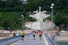

BG Beaches
»
Burgas
Burgas
Suitcase full with clams
Gramophone
Main Street
Sea Garden
Bridge
Port
Beach
Neptun

The bridge photographed from the seaside
Jump in the water from the pier
A monument from the grateful Arm?nians
Burgas22